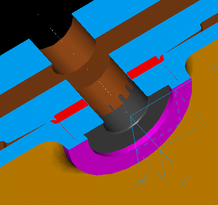

| Next Page | Previous Page | First Page |
Show the Clutch from the Clutch Assembly.
|  |  |

Use the Dynamic Clip AC Plane to show the interference between the Clutch and the Bearing and the Gear Housing.


Select the Bearing and the Clutch to check for Interference. Select the center or left button to find the interfering volume.
Then Create Geometry to get a part the shows the interfering volume.
 |
 |

Turn OFF the Assembly display, to leave the part only.

Measure the distance between the highlighted edges. (should be approx 2.7mm)
 |

Delete the interfering volume part.
Turn ON the Assembly display.
Use the History Access form to Modify
the Extrusion depth of the first extrsion on the tree, from 40
-> 43mm.
ie 40 plus the 2.732 from the interference plus the rest to allow the
clutch to float a little on the clucth shaft.

Update to see the change.